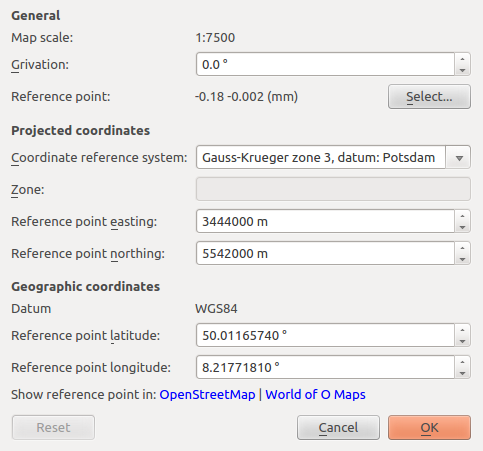

The georeferencing of a map defines the relationship between map coordinates (as measured on the printed map) and coordinates in the real world. Thus the georeferencing is fundamental for aligning templates (such as base maps or aerial imagery) and GPS tracks.
The georeferencing properties are set in a dialog which is available from the menu via Map > Georeferencing.... The dialog is divided in three sections: General, Projected Coordinates and Geographic Coordinates.
This section defines general properties of the mapping between map coordinates and projected coordinates. Projected coordinates are transformed to map coordinates by scaling and rotation.
The Map scale field determines the scaling from projected coordinates (real-world metric cartesian coordinates) to map coordinates.
The Grivation field determines the rotation which moves the magnetic north to the top of the map. Grivation is composed of magnetic declination (the angle between true north and magnetic north) and grid convergence (the angle between true north and grid north).
The Reference point field shows which point the map will be assigned real world coordinates in the other sections. To change the reference point, use the Select... button. The georeferencing dialog will than be hidden until you select a point on the map (left mouse click) or cancel the selection process (another mouse button). Changing the reference point will not affect the other sections.
This section defines the projected coordinate reference systems on which the map is based, and assigns projected coordinates to the reference point.
The Coordinate reference system (CRS) field allows you either to directly select a known CRS, or to give a custom CRS specification. Selecting the Edit projection parameters... option will copy the full CRS specification of the previously selected CRS to the input field for further editing. Projections are handled by the PROJ.4 Cartographic Projections library. Specification examples may be found at http://www.remotesensing.org/geotiff/proj_list/ and http://spatialreference.org/.
Selecting Local coordinates will allow you to use local projected coordinates without a mapping to global geographic coordinates. If an invalid specification is given, projected coordinates will be treated as local, too.
The Zone field may be active to specify a particular zone the projected coordinates will refer to.
The Reference point easting and Reference point northing fields are for specifying the east-west and north-south position of the reference point in projected coordinates. Unless working with local coordinates, changing easting or northing will update the geographic coordinates in the next section. Easting and northing are given in meters.
Geographic coordinates specify a location on the planet's surface by latitude and longitude. Latitude and longitude are measured in decimal degrees.
The Datum field shows the datum the geographic coordinates refer to. This is especially relevant for the longitude.
The Reference point latitude specifies the north-south position of the reference point as an angle relative to the equatorial plane. Negative values indicate the southern hemisphere.
The Reference point longitude specifies the east-west position as angle relative to a prime meridian. Negative values indicate a position west of the prime meridian.
The last line in the Geographic coordinates section contains hyperlinks for opening the reference point in OpenStreetMap or in the World of O Maps directory.
The (mouse) cursor position of the map editor can be displayed in map coordinates, projected coordinates or geographic coordinates (decimal or as degrees/minutes/seconds, DMS). The coordinates of the cursor on the map sheet are discussed
Updated on May 13, 2012